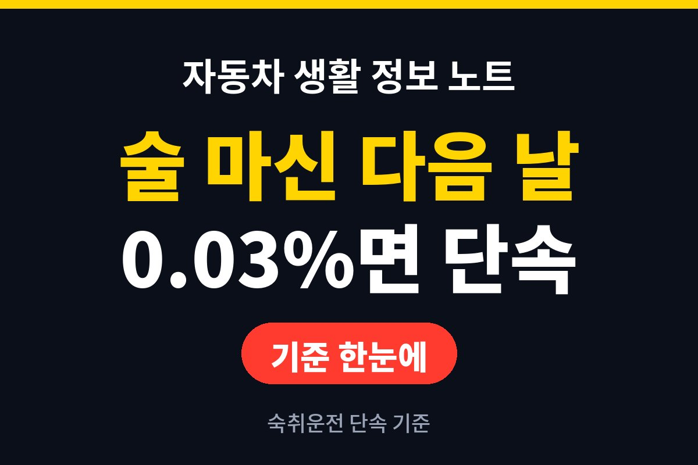
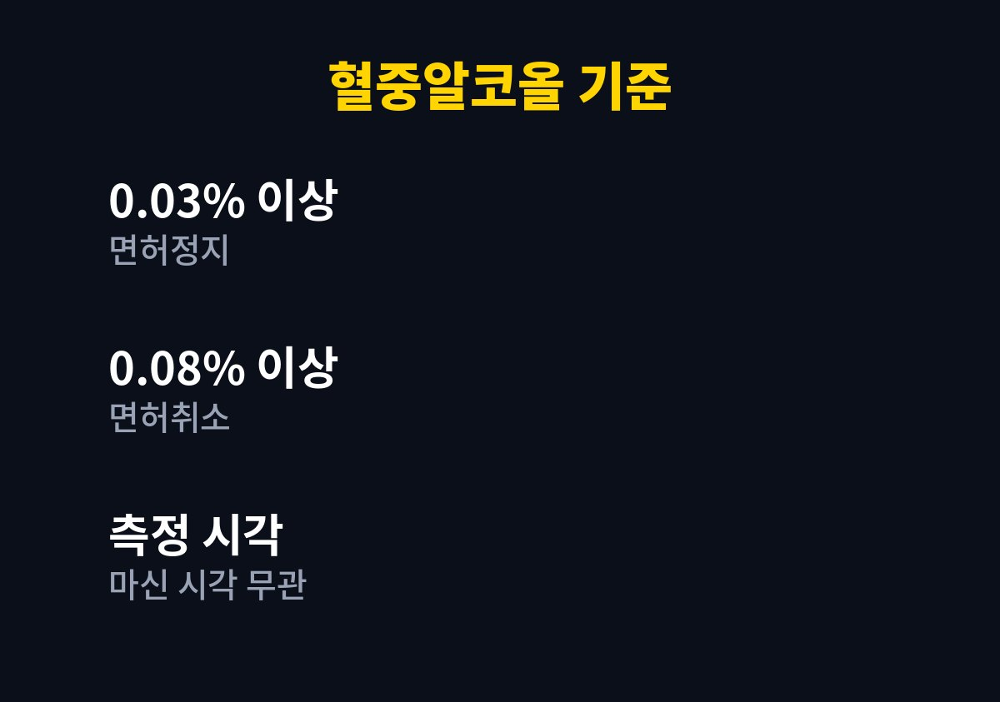
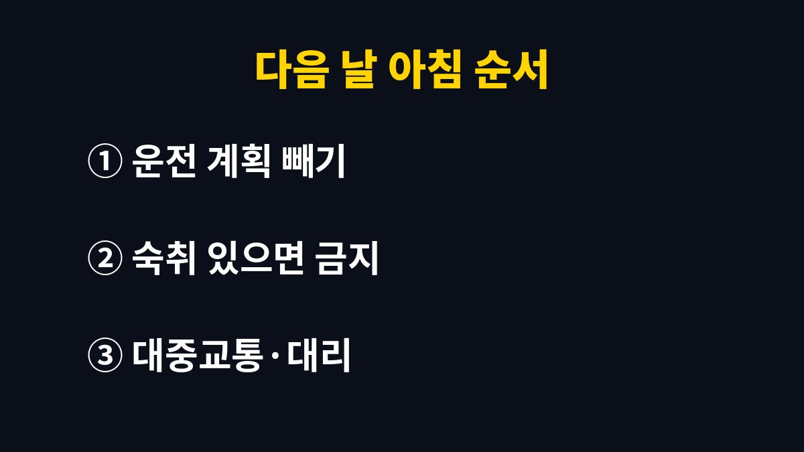

숙취운전 단속 기준은 따로 없고, 다음 날 아침이라도 혈중알코올농도 0.03% 이상이면 일반 음주운전과 똑같이 처벌된다.
연말 회식이 몰리는 11월과 12월에는 출근 시간대 단속도 함께 늘어난다.
잠을 잤다는 사실은 수치에 아무 영향을 주지 못한다.
알코올은 잠자는 동안에도 몸이 분해하는 속도만큼만 빠진다.
늦게까지 마시고 몇 시간 눈을 붙인 정도로는 출근길에 수치가 남아 있을 수 있다.
머리가 맑다는 느낌과 측정기 숫자는 따로 움직인다.
도로교통법은 술을 마신 시각을 따지지 않고 운전할 때의 혈중알코올농도만 본다.
그래서 전날 밤 술이 아침에 측정돼도 처벌 구간은 저녁 음주와 같다.
찬물 샤워나 진한 커피는 졸음을 잠깐 덜어 줄 뿐 혈중 알코올을 줄이지 못한다.
구강청결제는 오히려 알코올이 들어 있어 측정 직전에 쓰면 곤란해질 수 있다.
결국 확실한 방법은 시간이 지나기를 기다리는 것 하나다.
도로교통법 제44조는 혈중알코올농도 0.03% 이상을 술에 취한 상태로 본다.
행정처분은 0.03% 이상이면 면허정지, 0.08% 이상이면 면허취소다.
형사처벌은 제148조의2에 따라 수치가 높을수록 무거워진다.
| 혈중알코올농도 | 면허 처분 | 형사처벌(초범 기준) |
|---|---|---|
| 0.03% 이상 0.08% 미만 | 면허정지 | 1년 이하 징역 또는 500만 원 이하 벌금 |
| 0.08% 이상 0.2% 미만 | 면허취소 | 1년 이상 2년 이하 징역 또는 500만 원 이상 1천만 원 이하 벌금 |
| 0.2% 이상 | 면허취소 | 2년 이상 5년 이하 징역 또는 1천만 원 이상 2천만 원 이하 벌금 |

0.03%는 생각보다 낮은 숫자다.
체중, 성별, 그날 컨디션에 따라 소주 몇 잔으로도 넘을 수 있어 잔 수로 계산하는 방식은 믿기 어렵다.
인터넷의 알코올 분해 계산기도 평균값이라 나는 참고만 하고 기준으로 쓰지 않는다.
예를 들어 자정 넘어 술자리가 끝나고 아침 7시에 차를 몰아야 하는 상황이라면, 출발 전부터 답이 거의 정해져 있다.
아래 순서는 숙취운전 단속을 피하려는 요령이 아니라 운전 여부를 판단하는 기준이다.

과음한 날은 점심이 지나도 수치가 남을 수 있다.
공식 안내에서 몇 시간이면 안전하다고 정해 둔 기준은 없다.
그래서 나는 전날 많이 마셨다면 다음 날은 아예 차를 쓰지 않는 날로 잡는다.
번거롭지만 면허정지 한 번이면 출퇴근과 생계가 함께 흔들린다.
회식 다음 날 아침 출근길 단속은 주요 도로 진입로나 아파트 단지 근처에서 이뤄지는 경우가 많다.
단속에 걸린 뒤 술을 마신 시각을 설명해도 처분 구간은 측정 수치로 정해진다.
측정 결과에 동의하지 않으면 채혈 측정을 요구할 수 있지만, 채혈 수치가 더 높게 나오는 일도 있어 늘 유리한 선택은 아니다.
차라리 전날 밤에 다음 날 이동 수단을 정해 두는 쪽이 마음이 편하다.
특히 화물차나 영업용 차량을 모는 사람은 면허정지가 곧 일을 쉬는 기간이 되므로 기준을 더 보수적으로 잡는다.
이미 단속에 걸렸다면 측정 수치와 측정 시각이 적힌 서류를 받아 두고, 처분 절차는 관할 경찰서 안내를 따른다.
이의가 있다면 혼자 판단하지 말고 경찰서 민원실이나 법률 전문가에게 먼저 묻는 편이 빠르다.
참고 자료: 법제처 국가법령정보센터 「도로교통법 제44조·제148조의2」(2026년 11월 확인) · 경찰청 「음주운전 단속 기준 안내」(2026년 11월 확인)
※ 2026년 기준 공공기관 안내를 바탕으로 정리한 글이며, 차종과 연식에 따라 기준이 다를 수 있어 차량 설명서와 공식 안내를 함께 확인하길 바란다.